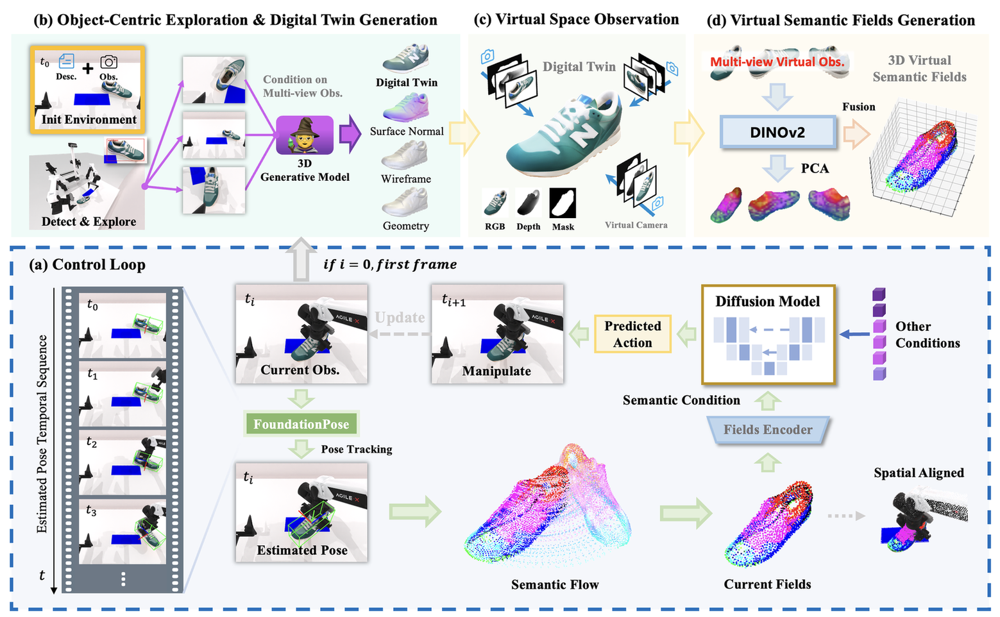
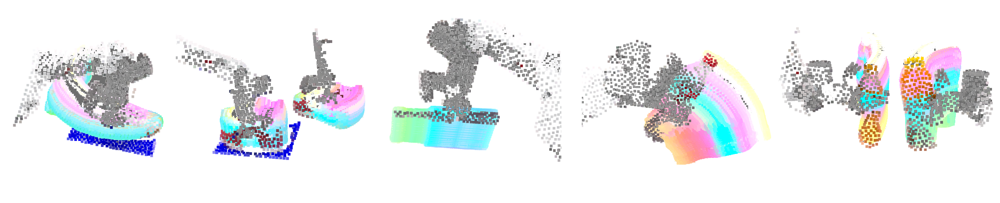

G3Flow: Generative 3D Semantic Flow for Pose-aware and Generalizable Object Manipulation
- 1 The University of Hong Kong,
- 2 Institute of Artificial Intelligence (TeleAI), China Telecom,
- 3 Shenzhen University,
- 4 AgileX Robotics,
- 5 GDIIST
*Equal Contribution, †Corresponding authors
Accepted to CVPR 2025
-
 arXiv
arXiv
- Code
Abstract
Recent advances in imitation learning for 3D robotic manipulation have shown promising results with diffusion-based policies. However, achieving human-level dexterity requires seamless integration of geometric precision and semantic understanding. We present G3Flow, a novel framework that constructs real-time semantic flow, a dynamic, object-centric 3D semantic representation by leveraging foundation models. Our approach uniquely combines 3D generative models for digital twin creation, vision foundation models for semantic feature extraction, and robust pose tracking for continuous semantic flow updates. This integration enables complete semantic understanding even under occlusions while eliminating manual annotation requirements. By incorporating semantic flow into diffusion policies, we demonstrate significant improvements in both terminal-constrained manipulation and cross-object generalization. Extensive experiments across five simulation tasks show that G3Flow consistently outperforms existing approaches, achieving up to 68.3% and 50.1% average success rates on terminal-constrained manipulation and cross-object generalization tasks respectively. Our results demonstrate the effectiveness of G3Flow in enhancing real-time dynamic semantic feature understanding for robotic manipulation policies.
Pipeline of G3Flow

Pipeline of G3Flow. Top: object-centric exploration builds a digital twin and extracts a complete 3D semantic field with a 3D generative model and DINOv2. Bottom: FoundationPose tracks the object so the field is updated as semantic flow and fed to a diffusion policy for pose-aware, generalizable manipulation.
Visualization of G3Flow

Bibtex
@InProceedings{Chen_2025_CVPR,
author = {Chen, Tianxing and Mu, Yao and Liang, Zhixuan and Chen, Zanxin and Peng, Shijia and Chen, Qiangyu and Xu, Mingkun and Hu, Ruizhen and Zhang, Hongyuan and Li, Xuelong and Luo, Ping},
title = {G3Flow: Generative 3D Semantic Flow for Pose-aware and Generalizable Object Manipulation},
booktitle = {Proceedings of the Computer Vision and Pattern Recognition Conference (CVPR)},
month = {June},
year = {2025},
pages = {1735-1744}
}
Acknowledgements
We thank D-Robotics for cloud computing support, and Deeoms for model support.